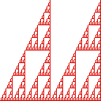

Dimensions of Unions, Exercise 3

Compute the box-counting dimension of the union of two gaskets.
What box side lengths should be used? What is the pattern relating N(r) and r?
Here are the
solutions
.